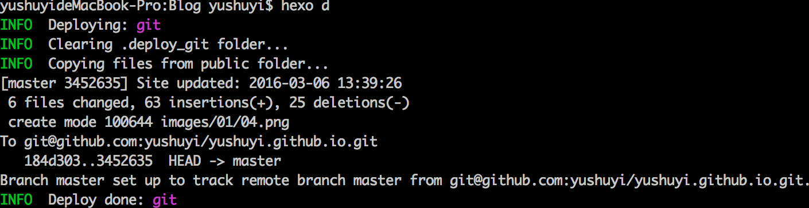
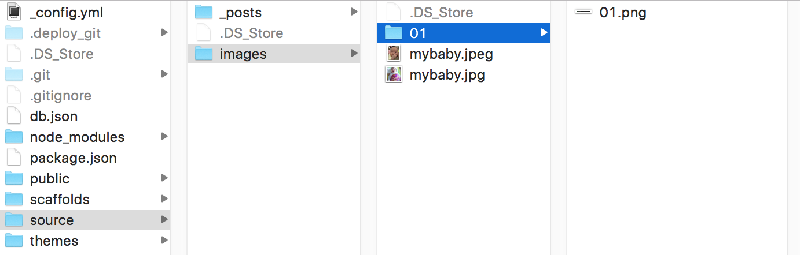
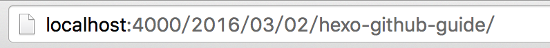

引言
Hexo是一款集快速、简洁且高效的博客框架,基于Node.js开发，本文主要介绍Hexo+Github部署博客的流程以及遇到的问题。
过程导航
整个过程大概是以下三步：
- 安装和部署Hexo
- 配置Hexo并关联至Github Pages
- 博客文件管理与撰写文章
安装和部署Hexo
安装Node.js
前往Node.js的官网下载安装包并安装。
安装Hexo
$ npm install hexo-cli -g
初始化Hexo至指定目录
$ hexo init /path
$ cd /path
$ npm install
生成静态界面
$ hexo generate(缩写 hexo g)
本地运行Hexo
$ hexo server(缩写 hexo s)
到此，Hexo的安装已经完成！控制台会提示你通过浏览器打开http://localhost:4000/
Hexo主配置文件
Hexo主配置文件位于init完成以后的根目录
/Blog path/_config.yml
选定主题
知乎的这篇帖子介绍了目前基于Hexo开发的个性主题。
我自己选择的是yilia主题，选定主题后，一般的部署方式是Clone项目到/Blog path/themes目录以后，修改/Blog path/_config.yml的theme参数为主题目录的名称，那么Hexo在生成静态页面时，会根据新的主题进行生成。
配置Hexo并关联至Github Pages
本地运行没有问题后，开始尝试将生成后的代码部署到服务器上面，这里主要介绍如何部署到Github Pages上面。首页我们需要在Github上面生成一个新的仓库，
具体的流程可以参考Github官方创建Pages的教程。
仓库创建完成后，我们需要再次修改_config.yml让Hexo与Github Pages进行关联，配置如下：
deploy:
type: git
repository: git@github.com:yushuyi/yushuyi.github.io.git
branch: master
配置完成以后执行以下命令
npm install hexo-deployer-git --save
最终执行部署
hexo deploy(缩写 hexo d)
一切顺利的话，会提示如下图：

博客文件管理与撰写文章
博客文件管理
Hexo init生成后的文件对于博客主来说非常重要，相当于你的博客管理后台，更相当于程序的源代码，既然是源代码就会涉及到维护的问题，所以，选择合适的版本控制工具是非常有必要的，我采用的方案是BitBucket来对源代码进行版本控制。
BitBucket提供最多五个人的免费私有仓库。对个博客主来说是非常不错的选择。
撰写文章
撰写文章方面我选用的是MacDown
添加百度统计
我参考的是这篇文章，基于yilia主题
在撰写博客时，遇到的一些问题
Hexo 默认主题打开非常缓慢
抓包访问以后发现，原来默认的主题采用了Google一款云字体，这是导致缓慢的主要原因，这有一片文章详细介绍了如何去除Google的云字体
MacdDown图片路径问题:
设置图片的代码直接用HTML,而不是用Markdown标准的语法，原因是可以灵活设置大小，代码如下：
<img src="../images/01/01.png" alt="图片的本地路径" style="width: 559px;height:29px;"/>
那么对应在/Blog path/source/ 目录下我也会设置好这个图片：

MacDown会根据相对路径找到图片并显示出来。
但是Hexo生成运行之后，在浏览器却无法正常加载，路径无效。检查后发现，原来Hexo在生成博客文章时，会根据时间来按文件夹细分，默认情况下精确到年-月-日-文章名称的路径，如下图：

那么我们前面设置的图片路径肯定是无法正确加载图片，因为路径不正确。
解决办法是修改Hexo生成博客文件路径的方式，。打开/Blog path/_config.yml 找到第17行,代码如下：
permalink: :year/:month/:day/:title/
我们将生成的方式修改为只根据title进行生成，代码如下：
permalink: :title/
保存以后重新生成并运行，图片完成展示出来！
使用yilia主题以后导致图片大小设置无效的问题：
因为我是在Retina MacBook Pro下进行截图，截出来的图也同样是高清分辨率，而yilia会默认安图片的原始大小进行展示，即便我设置了指定的宽高也无济于事。于是我去检查Hexo生成的index.html源代码，发现，index.html的img标签是没有错得。那么应该是JavaScript在运行时进行了改动。接下来就是阅读yilia的js源代码，寻找运行时修改的那一段，原来是
在/Blog path/themes/yilia/source/js/main.js
里面有这么一段代码：
require(['/fancybox/jquery.fancybox.js'], function(pc){
var isFancy = $(".isFancy");
if(isFancy.length != 0){
var imgArr = $(".article-inner img");
for(var i=0,len=imgArr.length;i<len;i++){
var src = imgArr.eq(i).attr("src");
var title = imgArr.eq(i).attr("alt");
imgArr.eq(i).replaceWith("<a href='"+src+"' title='"+title+"' rel='fancy-group' class='fancy-ctn fancybox'><img src='"+src+"' title='"+title+"'></a>");
}
$(".article-inner .fancy-ctn").fancybox();
}
JavaScript的代码我不是很懂，不过大概意思我是明白，所以我进行了如下修改：
require(['/fancybox/jquery.fancybox.js'], function(pc){
var isFancy = $(".isFancy");
if(isFancy.length != 0){
var imgArr = $(".article-inner img");
for(var i=0,len=imgArr.length;i<len;i++){
var src = imgArr.eq(i).attr("src");
var title = imgArr.eq(i).attr("alt");
var style = imgArr.eq(i).attr("style")
imgArr.eq(i).replaceWith("<a href='"+src+"' title='"+title+"' rel='fancy-group' class='fancy-ctn fancybox'><img src='"+src+"' title='"+title+"' style='"+style+"'></a>");
}
$(".article-inner .fancy-ctn").fancybox();
}
保存重新生成并运行，图片大小可以灵活控制了
切换theme后 页面运行时样式错乱
这个原因可能是Hexo生成页面的BUG，解决方法是执行清理命令重新生成一次。
hexo clean
hexo g